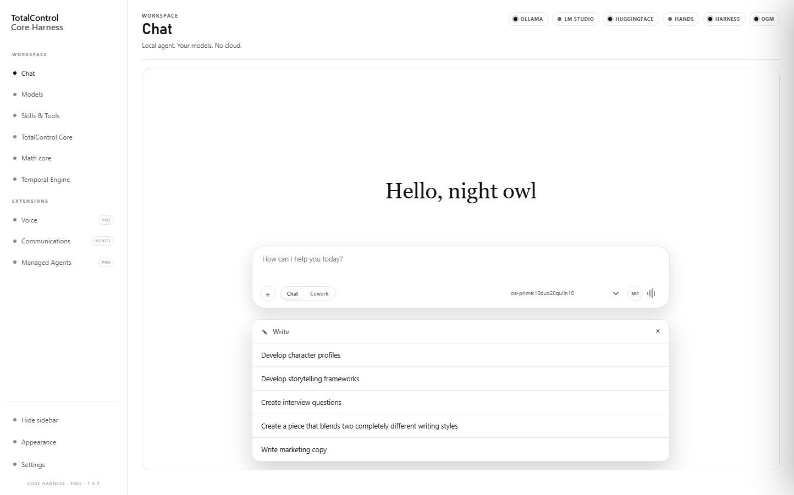

Chat
A local conversation with your installed models. No cloud round-trip, no borrowed weights.
The workspaceOroboros / Anthropic
The local machine, refracted.
A glass-clear studio for chat, agents, ads, artwork, and everything you make. Local by architecture. Nothing leaves the box it runs on.
01 / The surface
Chat, models, skills, memory, and the hands that run them — held in a single local surface. The glass is not decoration; it is the hierarchy.

02 / The loop
One local loop for the whole stack: the conversation, the agents that act on it, and the public glass that opens it to the world.
A local conversation with your installed models. No cloud round-trip, no borrowed weights.
The workspaceSkills, tools, and managed agents loaded from your own roots. The next turn, already prepared.
Managed agentsGlasswing is the public door to the local stack — status, surfaces, and the path in.
Open Glasswing03 / The portal
Glasswing
Glasswing is the gated data plane and the public portal of the local system. Status, surfaces, and the way into the stack — without exposing the machine behind it.
Oroboros / Anthropic
Everything begins on your machine. The glass is only how it catches the light.